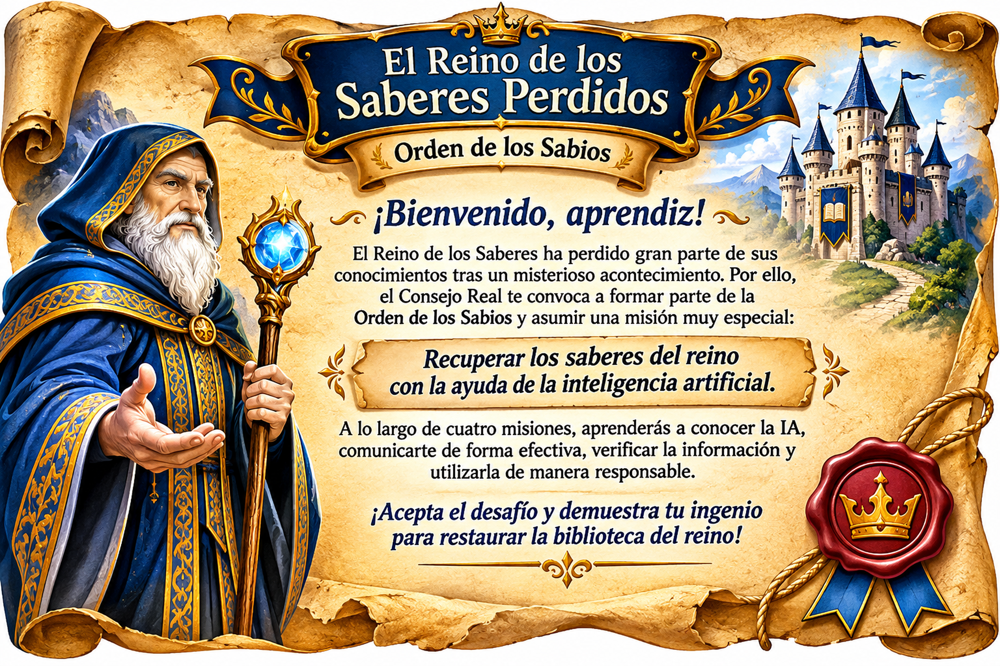
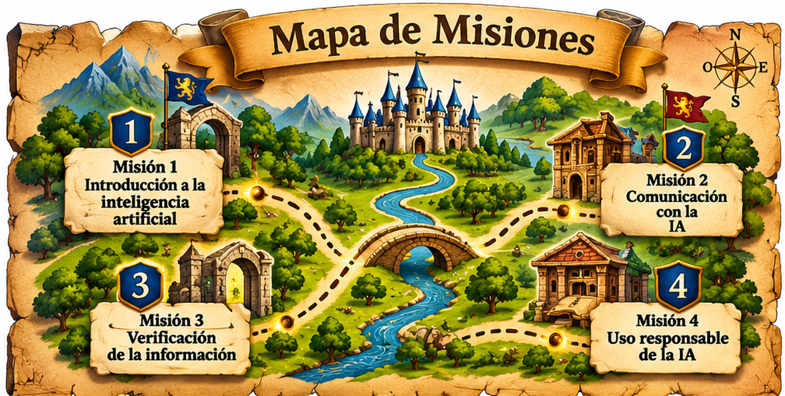
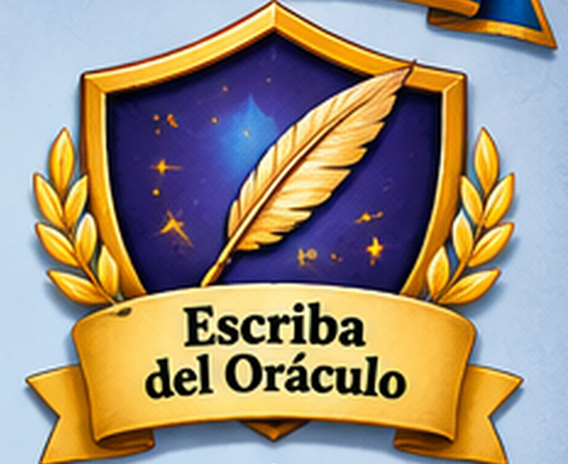
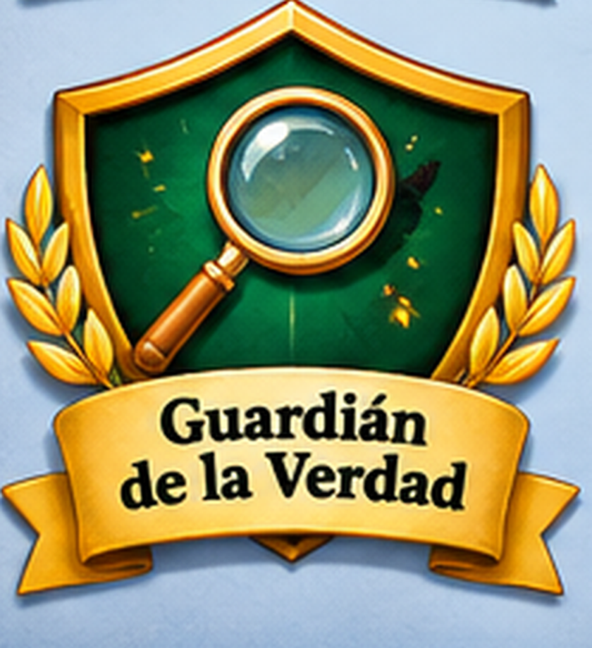
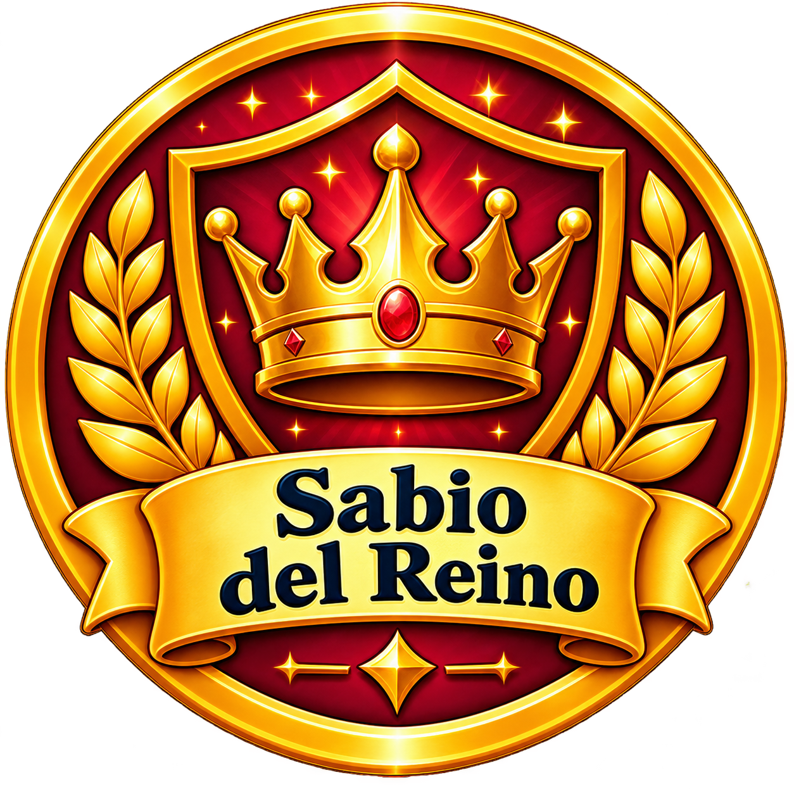

01
Misión 1
El despertar del Oráculo
Reconoce qué es la inteligencia artificial, sus aplicaciones y sus limitaciones.
Entrar a la misión →
Recorre las cuatro misiones en orden. Cada desafío te permitirá recuperar una parte del conocimiento y demostrar lo que has aprendido.

Selecciona una misión para ingresar a su espacio de aprendizaje, resolver los desafíos y completar tu evidencia individual.
Misión 1
Reconoce qué es la inteligencia artificial, sus aplicaciones y sus limitaciones.
Entrar a la misión →Misión 2
Aprende a formular instrucciones claras para consultar al Oráculo Real.
Entrar a la misión →Misión 3
Investiga, contrasta fuentes y descubre los errores del Oráculo.
Entrar a la misión →Misión 4
Integra lo aprendido y crea una infografía digital responsable.
Entrar a la misión →Cada insignia reconoce el aprendizaje demostrado al completar una misión.

Aprendiz del Reino

Escriba del Oráculo

Guardián de la Verdad

Sabio del Reino